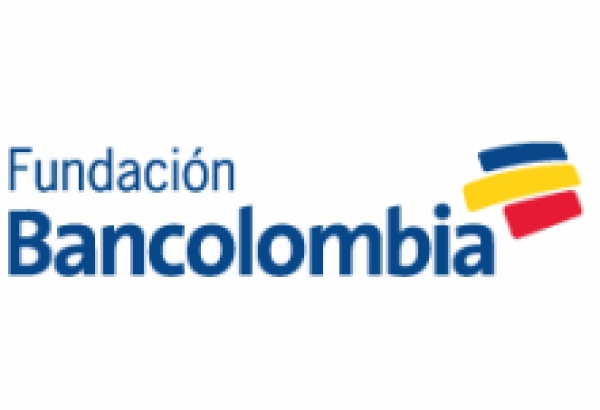

El ICBF:Instituto Colombiano de Bienestar Familiar, es la entidad del Gobierno de Colombia que trabaja por el bienestar de los niños, las niñas, los adolescentes y sus familias.
Por medio de una alizan hecha hace 4 cuatro la fundación RESCATANDO SUEÑOS y el ICBF celebraron un convenio para apadrinar a niños de escasos recursos y en estado de abandono por medio de la fundación, obteniendo asi acceso a las bases de datos de los niños en esta situación y la oportunidad de llegar a ellos mas facil.
EL ICBF ICBF con sus servicios brinda atención a niños y niñas, adolescentes y familias, especialmente a aquellos en condiciones de amenaza, inobservancia o vulneración de sus derechos. La Entidad cuenta con 33 regionales y 206 centros zonales en todo el país, llegando a más de 8 millones de colombianos con sus programas y estrategias de atención.
Pagina web:
FUNDACIÓN BANCOLOMBIA

La fundación Bancolombia del Banco de Colombia, tiene como misión facilitar el desarrollo social a través del apoyo a programas en primera infancia, educación, emprendimiento y el voluntariado corporativo; buscando dinamizar los objetivos de una banca más humana y sostenible.
Pagina web: